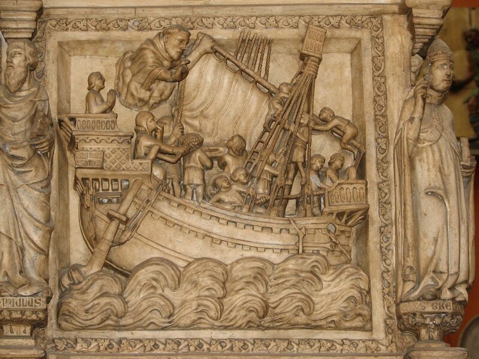
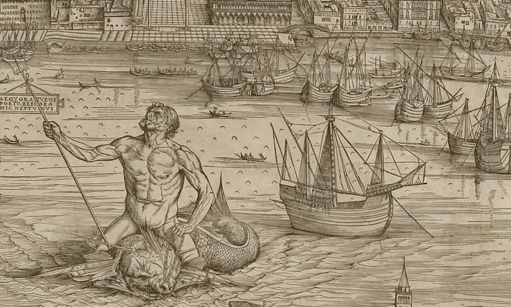

Сейчас настало время расширить географические рамки нашего рассказа и к североевропейским кораблям добавить их южноевропейских – средиземноморских – братьев (или сестер; это как вы привыкли считать) .
В качестве образца для наших рассуждений возьмем каракку с гравюры , которая открывает манускрипт Latin 6142 из собрания Французской Национальной библиотеки.

В манускрипте собраны работы четырех авторов XV века, не имеющих прямого отношения к морскому делу. Во Францию рукопись был привезена из Неаполя для короля Карла VIII.
На гравюре мы найдем множество элементов, которые почти буквально перенесены с гравюры фламандской каракки Мастера W с ключом.

Так как фламандская каракка изображена с левого борта-кормы, а средиземноморская – с носа-правого борта, то в совокупности эти две гравюры дают нам представление о каракке в целом.
Конечно, мы должны видеть технические недостатки обоих этих изображений. Об искажении перспективы на фламандской каракке мы говорили раньше, этот же недостаток присущ и ее средиземноморской родственнице. Для того, чтобы выразить округлость бортов каракки в носовой части, гравер делает фендерсы (см. выше) излишне закругленными, но умения изобразить это с соблюдением законов перспективы у него еще недостаточно, и он показывает направление их выпуклости в нос, а не наружу.
Но для нас важнее не поиски погрешностей изображения, а определение, в чем различие этих двух экземпляров одного и того же типа корабля.
Первое, на что мы обращаем внимание, когда смотрим на изображение средиземноморской каракки – это непонятные «шашечки», расположенные на одинаковых расстояниях друг от друга над средним вельсом (продольным усиленным поясом обшивки) . Это выступающие за обшивку торцы поперечных брусьев набора – бимсов. Именно такой набор корпуса издавна был характерен для средиземноморского, и вообще восточного кораблестроения. Если мы взглянем на изображение корабля начала XIV века на надгробном памятнике Св. Петра Веронского, то увидим подобные же торцы балок под его палубами.

Джованни ди Балдуччо (Giovanni di Balduccio (ок. 1290 – после 1339) Надгробие Св. Петра Веронского (Мученика), 1339, Милан.
Правда, в отличие от корабля XIV века на средиземноморской каракке отмечается значительно большая продольная седловатость палубы, особенно по направлению к носу корабля.
Выход торцов бимсов за пределы наружной обшивки – старая традиция на Средиземном море. Так набирали корпус и египтяне, такую технику использовали и древние римляне.
Показательным является изображение двухмачтовых парусников с латинским вооружением на знаменитом виде Венеции с высоты птичьего полета Джакопо ди Барбари.

Фрагмент карты Венеции итальянского мастера Джакопо ди Барбари (Jacopo de' Barbari (1460/1470 – до 1516), ок. 1500 г.
На среднем плане справа мы видим группу интересующих нас кораблей с выступающими торцами бимсов. Учитывая дату исполнения гравюры, мы можем утверждать что по крайней мере до начала XVI века такая техника еще использовалась на отдельных типах средиземноморских кораблей.
Продолжение последует.